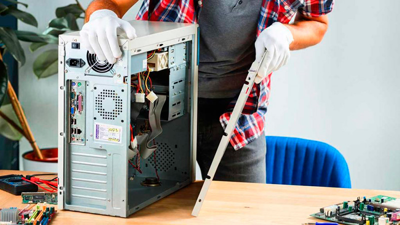
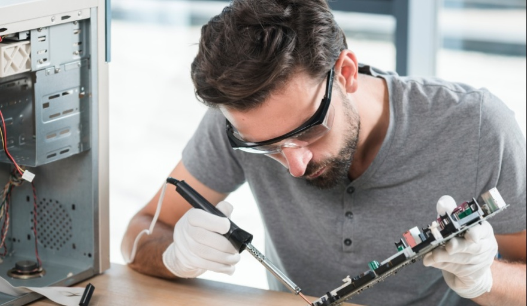

Universidad Tecnologica Nacional
Curso: Armado y Reparación de Computadoras
Competencias academicas adquiridas
Como técnico en reparación de computadoras egresado de la UTN adquirí competencias en el diagnóstico y resolución de fallas de hardware y software, identificando problemas en componentes como placas madre, fuentes de alimentación, memorias y unidades de almacenamiento para restablecer el correcto funcionamiento de los equipos. También desarrollé habilidades en el mantenimiento preventivo y correctivo de computadoras de escritorio y portátiles, así como en la instalación y configuración de sistemas operativos y controladores. Además, consolidé capacidades en el armado y actualización de equipos según las necesidades del usuario, y adquirí conocimientos en redes básicas y conectividad para brindar soluciones integrales de soporte técnico.
Periodo
Fecha de Ingreso: Agosto 2023
Fin de Curso: Diciembre 2023
Imagenes del curso

